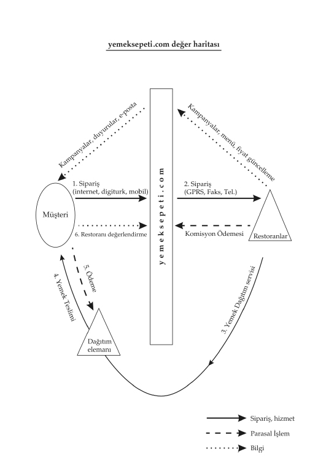
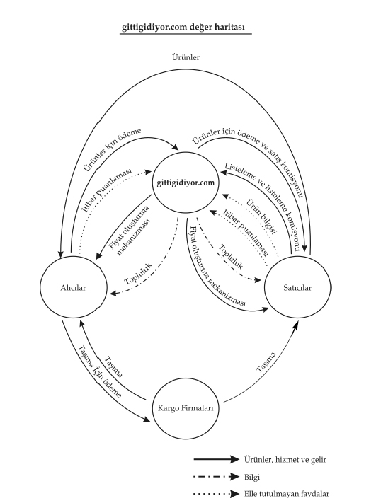

“Eylemle sonuçlanmamış bir fikir pek birşey ifade etmez.
Bir düşünce eseri olmayan eylemler de bundan farklı değildir.”
Georges Bernanos
Dördüncü gelir modeli “Satış”. Ürünlerin, bilgilerin, hizmetlerin satılması karşılığında ücret alınmaktadır. İsterseniz mp3 satışı yapın, isterseniz logo-melodi satın, müşterinizden para alıyorsunuz. hepsiburada.com sitesi üzerinden bir çok ürün satıyor, önceki sayfalarda incelediğimiz modellerden bir tanesini kullanıyor ve müşteriler daha ellerine ulaşmamış ürün için peşin para veriyorlar. Hepsiburada bu ürünleri müşterilere satmak için stok yapıyor olabilir veya doğrudan tedarikçiden temin ediyor olabilir. Sitesinin gelir modeli, asıl olarak satışa dayanıyor. Satış için illaki elle tutulur fiziksel bir ürün satmak zorunda değilsiniz, elektronik kitap yazdıysanız ve bunu internet üzerinden satmak istiyorsanız okuyucularınıza bitler ve byteler gönderiyorsunuz ve bu veri karşılığında para alıyorsunuz. Bu bir rapor, pazar analizi veya bir resim olabilir... Satış yapıyorsunuz.
Geldik son gelir modeli maddemiz olan “İşbirliği ve komisyon” gelirlerine... Bir çok elektronik ticaret sitesi, onlara yönlendirmiş olduğunuz satış için size belli bir komisyon verirler. Sitenize onlardan alacağınız kodları yerleştirdiğiniz taktirde ve siteniz üzerinden üyeleriniz ilgili internet sitelerine gidip bir ürün, hizmet satın aldıkları taktirde size işbirliği komisyonu verirler. Fiziksel hayatta bu modelin en başarılı olanı yemeksepeti.com diyebiliriz. Yemeksepeti restoranlara gönderdiği müşterilerin siparişleri için restoranlardan belli oranda komisyon almaktadır. Bu geliri satış olarak da değerlendirmek mümkün olabilir ancak yemeksepeti bu yemeklerin doğrudan satıcısı olmadığı için komisyon gelirleri altında değerlendirmek daha uygun olacaktır.
5 ana gelir kalemini özetle anlattıktan sonra unutulmaması gereken nokta, siteniz için mutlaka “gelir çeşitlemesi” yapmaktır. Fikriniz ne kadar yaratıcı olursa olsun gelir ve iş modeliniz yoksa ve daha sonra bulacağınızı düşünerek yola çıkıyorsanız, büyük ihtimalle başarısız olursunuz. Şimdi, iş modeli kavramına bir bakalım.
Eğer internet üzerinde hayır işi yapmıyorsanız “iş modeli”niz belli bir pazarda kâr etme amacıyla tasarlanmış planlı bir faaliyet setini anlatır. İş planı ise şirketinizin iş modelini anlatan dokümandır. E-ticaret iş modeli ise internet’in eşsiz özelliklerini sonuç almak için kullanmayı ve kaldıraç etkisi yaratmayı amaçlar. Peki, kaldıraç etkisi nedir? Kaldıraç etkisi çok az bir kuvvetle yapabileceğinizden fazla bir işi gerçekleştirmektir. Örneğin; bir bakkal dükkanı açacak olursanız; bir günde en fazla 500 müşteriye hizmet edebilirken, internet üzerinde aynı sayıda kişiye bir dakikada servis verebilirsiniz.
Diğer kavramlara geçmeden e-ticaret ve e-iş kavramını da inceleyelim.
İngilizce e-commerce (e-ticaret) ve e-business (e-iş) kavramları birbiriile oldukça sık karıştırılmaktadır. Akademik yaşamda e-iş, sıklıkla şirketlerin tedarikçileri ve iş süreçleri için kullandıkları modelleri kapsarken, e-ticaret kavramı müşterilere internet üzerinden satışı ifade etmektedir.
Her fikir basit bir grafik olarak çizilirse bütün sorunlu noktalar görülebileceği gibi, gelir modelinizi de kolaylıkla ortaya koyabilirsiniz. Şimdi bu iş modelleri de 5 ana başlık altında inceleyelim:
1.Pazaryerleri,
2.Bir araya getirenler,
3.Değer zincirleri,
4.Birleşmeler, ittifaklar,
5.Dağıtıcı ağlar.
Alıcılar ile satıcıları bir platformda buluşturan modelleri bu başlık altında incelemek mümkündür. Akla gelecek en iyi örnekler gittigidiyor.com ve ebay.com olacaktır. “google.com /answers” modeli de bu “pazaryerine örnek olabilecektir. (Google cevaplama servisi, isteyenlerin soru sorduğu ve internetteki uzmanların bu sorulara belli bir ücret karşılığında para verdiği bir sistem.)
Bir araya getirenler üreticilerden aldıkları hizmetleri veya ürünleri sitelerinde birleştirerek müşterilerine sunarlar. Pazaryeri platformundan farklı olarak, şirketler satıcılarla alıcıların arasına girmektedirler. Örnekler, hepsiburada.com, amazon.com olabilir. Hepsiburada, tüm tedarikçilerinden aldığı, stokladığı, almadığı veya stoklamadığı ürünleri sitesinde müşterilerine sunar.
“Değer zinciri” modelinin birleştirici modelinden farklı yönü, aradaki şirketler daha fazla katma değer ortaya koymasıdır. Dell bir dizüstü bilgisayarı üretmek için, bir çok parçayı üreticilerden alır ve üzerine kendi süreçlerinden ortaya çıkan katma değeri de ekleyerek tüketicilere sunarlar.
Birleşmeler ve ittifaklar, bize, internetin getirdiği yeni modellerden bir tanesidir. Hem tüketici hem de üretici olabileceğiniz hizmet ve ürünler olabilir. Forumlar bunlara en güzel örnektir. Forumlara hem fikirlerinizi yazarsınız hem de diğer katılımcıların fikirlerini okursunuz. Hem tüketirsiniz hem de üretirsiniz. Açık rehber projesi, dmoz.org’da başka bir örnek olacaktır. Gönüllü editörler internet üzerinde ilgi alanlarına göre siteleri kategorilere ayırırlar, on binlerce editör gönüllü olarak ilgilendikleri internet sitelerini dmoz.org sitesi üzerinde listelerler. Hem üretirler hem de dmoz.org projesinden kendileri de yararlanırlar. Linux’da bu modele uygundur.
Dağıtıcı ağlar, tüm bu modellerin alt yapısını oluşturur. Internet servis sağlayıcılar, telekom şirketleri bizim bu modelleri kurmamıza yardımcı olurken, kendileri de dağıtıcı ağ modelini oluştururlar.
yemeksepeti.com modelini sizin bir kahve molanızda peçete üstüne çizdiğinizi düşünelim. Bu çok basit çizim, aslında iş planınızın bir parçasını oluşturacaktır. Yaptığınız çizim, gelir modelinizi de açıklıkla gösterecektir. Sizin de aklınızda bir fikir varsa ve bunu uygulamayı düşünüyorsanız mutlaka buna benzer karalamalar yapın. Bu şekiller hem sistemi kağıt üzerinde denemenizi sağlayacaktır hem de yeni fikirlerin ortaya çıkmasına yardımcı olacaktır.
Model, en basit anlamıyla daha önce telefonla evlere servis yapan restoranların aynı platform altında birleştirilerek yemek menülerinin müşterilere internet üzerinden gösterilmesi, ziyaretçilerin de bu modeli kullanarak istedikleri yemekleri site üzerinden sipariş edebilmeleridir. Müşteri ilk olarak siteye girer, oturduğu semti seçerek kendisinin bulunduğu çevreye dağıtım yapan restoranları ve menülerini güncel olarak görür. Daha sonra siparişini verir. Bu istek kullanılan teknolojiye bağlı olarak yemeksepeti tarafından, ilgili restorana iletilir. Yemek siparişi en geç 45 dakika içinde restoran tarafından siparişi veren müşteriye ulaştırılır. yemeksepeti.com’dan sipariş veren kişi ödemeyi kapıda yapar. Daha sonra yaşadığı bu sipariş tecrübesine göre, restoranı yemeksepeti.com üzerinde değerlendirir. yemeksepeti.com gerçekleşen satışlar üzerinden anlaşmalı olduğu restoranlardan komisyonunu belli periyotlarda tahsil eder. Akış en sade anlamı ile bu şekilde işler.
Gözle görülmeyen diğer faydalar olarak, indirimler ve güncellemeler aklımıza gelir. Bunları da çizdiğimiz grafik üzerinde gösterebiliriz. (Grafik1)
İndirimler yapmak isteyen şirketler özel olarak bunu internetten duyurabilirler. Menülerini sürekli güncelleyerek kapıdan dağıtma sıkıntısından bir bakıma kurtulmuş olurlar. Müşteriler indirimlerden ve kampanyalardan e-posta ve site sayesinde hemen faydalanma fırsatı bulurlar.
Ocak 2001’de yemeksepeti.com İstanbul’daki kullanıcılar için açıldığında 23 restoranla anlaşmışlar. İlk ay, 15 restoran daha eklerler ve Ocak ayı sonunda toplam 38 restorana ulaşırlar. Tanıdıkları ve arkadaşları siteden sipariş verirler. Günde 2-3 sipariş almaya başlamışlardır. İlk ay 100 kişi üye olmuştur. Her sipariş 15 saniyede bir yazılımla kontrol edilip onları uyarır. Tanıdıklarının dışında ilk sipariş, ekibi çok heyecanlandırır. İlk günler 5-6 sipariş günlük rekorları olur ve her sipariş geldiğinde bilgisayarları onları bir sesle uyarmaya devam eder.

Grafik-1
Gittigidiyor, ilk iş planı çıkarttığında istedikleri bir çok alt modeli dokümanlarına yazamamışlardır. Türkiye’nin ticaret ortamına eBay.com modelini uygulamaları için alıcı ve satıcıları güvenli bir platformda ticaret yaptırmaları gerektiği düşüncesindeydiler.
Satıcılar mallarını sattıklarında, alıcılar malın ücretini gittigidiyor’a bloke ettirecekler, bu bilgiyi öğrenen satıcı malı gönderecek, müşteri malı teslim aldığını söyledikten sonra ‘gittigidiyor’ satıcıya bloke edilmiş parayı gönderecektir. İşte tüm bu akış güvenli bir ticaret ortamının oluşmasını sağlayacaktır. Bu akışı kendilerinin keşfettiği fikrine kapılırlar, ama internette araştırıp qxl.co.uk sitesine girdiklerinde, bu sistemin beta testinde olduğunu, eBay.com’da ise daha önceden beri bu akışın arka planda uygulandığını görünce daha uzun yolları olduğunu anlarlar. Zaten değişkenler bellidir. Aklın yoluda birdir. İlk aşamada sitelerinde güvenli ticareti seçimli olarak koymayı düşünseler de, daha sonra bunu tek seçenek olarak kullanıcılara sunarlar.
gittigidiyor.com Türkiye’de güvenli ticareti uygulayarak rekabet avantajı sağlamıştır. Rakiplerinden farklı olarak bu modeli başlangıçtan beri uygulamaları, pazara getirdikleri avantajı ortaya koymaktadır. Yurtdışındaki modellerin bir kısmında bu özellik seçimlik olsa da Türkiye’de internet üzerindeki ticaretin yapılabilmesi için bu özelliğin mutlaka uygulanması gerekliliğini başta yapmış oldukları araştırmalar sonucunda anlarlar. Rekabet avantajlarını açık seçik ortaya komuşlardır: “Güvenli Ticaret” (Grafik - 2)

Grafik-2